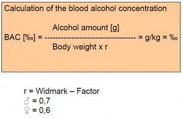

Alkohol
Tilbake til artikkelserien om næringsstoffene
De fleste har et forhold til alkohol, men vi tenker sjelden på at dette stoffet kan bidra med en betydelig mengde energi, og energimengden er målt til 7kcal/gram. Tradisjonelt sett har alkohol hatt en sentral rolle som rusmiddel, og de aller fleste inntar alkohol i en eller annen grad.
Kjemisk består alkohol av grunnstoffene karbon, hydrogen og oksygen, og felles for alle alkoholforbindelser er at de inneholder en OH-gruppe. Den formen for alkohol som finnes i alkoholholdige drikkevarer er etanol, som dannes ved fermentering/gjæring av sukker.
Opptak og fordeling i kroppen
Alkohol tas hovedsakelig opp i tynntarmen, men opptaket kan også foregå i magesekken, spesielt ved faste. Dersom du drikker alkohol til et måltid, vil alkoholen befinne seg lenger i magesekken. Noe vil brytes ned her, noe som gjør at ikke all alkoholen kommer ut i blodet. Dette forklarer hvorfor man ikke blir like påvirket når man drikker til et måltid.
Alkoholen fordeler seg i den fettfrie kroppsmassen, noe som er grunnen til at menn generelt tåler mer alkohol enn kvinner.
Metabolisme
Alkohol metaboliseres i leveren med en hastighet på 0,15 promille per time. Etanol brytes ned til acetaldehyd som videre brytes ned til acetat. Acetat kan enten gå inn sitronsyresyklusen og brukes som energi, eller det kan bli omdannet til fettsyrer.
Nedbrytningen av alkohol bruker ulike enzymsystemer som finnes i leveren, blant annet ADH (alkohol dehydrogenase) og MEOS (mikrosomalt etanoloksiderende system). Noe vil også skilles ut gjennom nyrene, pustes ut via lungene eller fordampe gjennom huden. 90% av alkoholen vil metaboliseres i leveren.
Påvirkning på metabolismen av andre næringsstoffer
Kroppen vil alltid prioritere å forbrenne alkohol, og dermed hemmer man forbruket av karbohydrater og fett. Glukose vil i større grad bli omdannet til melkesyre, noe som gir en forsuring av kroppen. Høyt nivå av melkesyre kan gi økt mengde urinsyre i blodet, siden disse skilles ut via de samme transportmekanismene i nyrene. I tillegg inneholder øl også urinsyre. Dette kan på sikt gi urinsyregikt.
Fettforbrenningen reduseres og fettsyresyntesen i leveren økes. Dette gir økte mengder fettstoffer både i leveren og i blodet, og kan forårsake hypertriglyseridemi. Redusert fettforbrenning kan også bidra til utvikling av overvekt.
Alkohol hemmer opptaket av thiamin, og langvarige alkoholikere har ofte mangelsykdommer knyttet til dette vitaminet. Siden thiamin er viktig for glukosemetabolismen, kan dette påvirke hjernefunksjonen siden glukose er hjernens foretrukne energikilde.
Problemer med å registrere inntak
Det kan være problematisk å kartlegge en persons inntak av alkohol. For det første er porsjonsstørrelsene ulike fra sted til sted. For det andre oppgis alkoholinnholdet av og til i volum%, og av og til i gram. Siden etanol har en lavere egenvekt enn vann, vil en volumprosent tilsvare 0,8g etanol/100g drikkevare. For å regne ut alkoholmengden kan du ta utgangspunkt i følgende tall:
Øl (4,5%) inneholder 18g etanol/0,5 liter
Vin (11%) inneholder 87g etanol/liter
Sprit (32%) inneholder 10g etanol/drink (4cl)
For å regne ut omtrentlig hvor høy promille du vil få, kan du ta utgangspunkt i følgende formel.

Positive effekter av alkohol
Et moderat inntak av alkohol er assosiert med lavere dødelighet av alle årsaker, men dette er tall som må tas med en stor klype salt. I den gruppen som ikke drikker alkohol finner vi blant annet tørrlagte alkoholikere, alvorlig syke (som ikke kan drikke pga sykdommen) og en del toppidrettsutøvere. Alle disse tilhører grupper som av forskjellige grunner har en høyere dødelighet, noe som vil påvirke resultatene. Det er med andre ord ingen gode helsemessige grunner til å begynne å drikke om du fra før er avholds.
Et moderat inntak av alkohol har likevel noen positive effekter. Blant annet har alkohol en svak HDL-økende effekt, samtidig som det virker blodfortynnende og reduserer blodkoagulasjonen, noe som kan virke beskyttende mot hjerte- og karsykdommer.
Alkohol og leveren
Som nevnt er leveren stedet der mesteparten av alkoholen omsettes. Dette har noen uheldige effekter på leveren, som blir verre jo høyere inntaket er. For det første krever nedbrytningen av etanol veldig mye oksygen, og faktisk benyttes hele 75-85% av leverens tilgang på oksygen. Dette gjør at levercellene kan oppleve oksygenmangel, noe som på fagspråket kalles cellulær hypoksi.
Økt produksjon av fettsyrer og redusert fettforbrenning kan gi oppsamling av fett inni levercellene. Eksporten av fettsyrer fra leveren vil derfor øke, noe som gir økte fettmengder i blodet, hypertriglyseridemi. Akkumulering av fett inni levercellene kan førertil alkoholisk fettlever, og dette kan på sikt føre til mer alvorlig leverskade som fibrose og cirrhose (danning av bindevev inni leveren). 80-90% av alle tilfeller av levercirrhose er forårsaket av alkoholinntak!
Alkohol og kreft
Tall fra WCRF (world cancer research fund) viser at det er en overbevisende årsakssammenheng mellom alkoholholdig drikke og en rekke kreftformer, blant annet kreft i fordøyelseskanalen (munn, mage, tarm) og brystkreft. Om dette er direkte effekter av alkohol eller om det er et resultat av stoffer som oppstår under nedbrytningen vet vi ikke.
Aktuelt om alkohol
Ifølge utviklingen av norsk kosthold 2010 er alkoholforbruket seksdoblet siden 1950, men de 10% av befolkningen som drikker mest står for omtrent halvparten av det totale forbruket.
Det norske totalforbruket av alkohol per innbygger er lavt sammenlignet med mange andre europeiske land, men den norske drikkekulturen innebærer at man drikker sjelden og mye hver gang, der man i andre land drikker oftere, men ikke så mye om gangen. Denne kulturen med helgefylla har nok større skadevirkninger enn et hyppigere, moderat inntak.
Det er en klar sammenheng mellom alkoholinntak og skader/ulykker, voldsepisoder, kriminalitet og sykelighet.